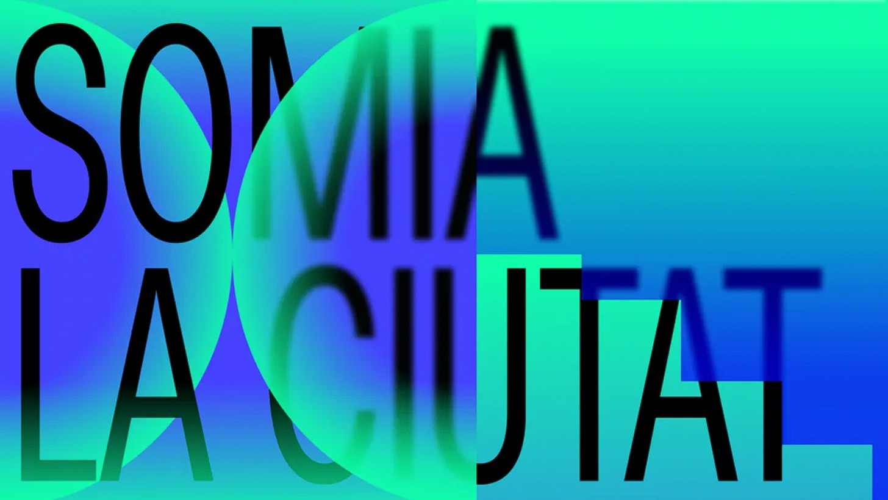

Exhibitions
A selection of international and academic exhibitions showcasing my work at the intersection of art, design, and emerging technologies. From AI-aided speculative series like the AIx Future Cities and Symbiotic Architecture collections—imagining conceptual urban futures with generative tools—to research-based projects such as Co-Design Canvas developed at Columbia GSAPP, these exhibitions explore how computational methods can reframe the way we envision and create spaces collaboratively.

